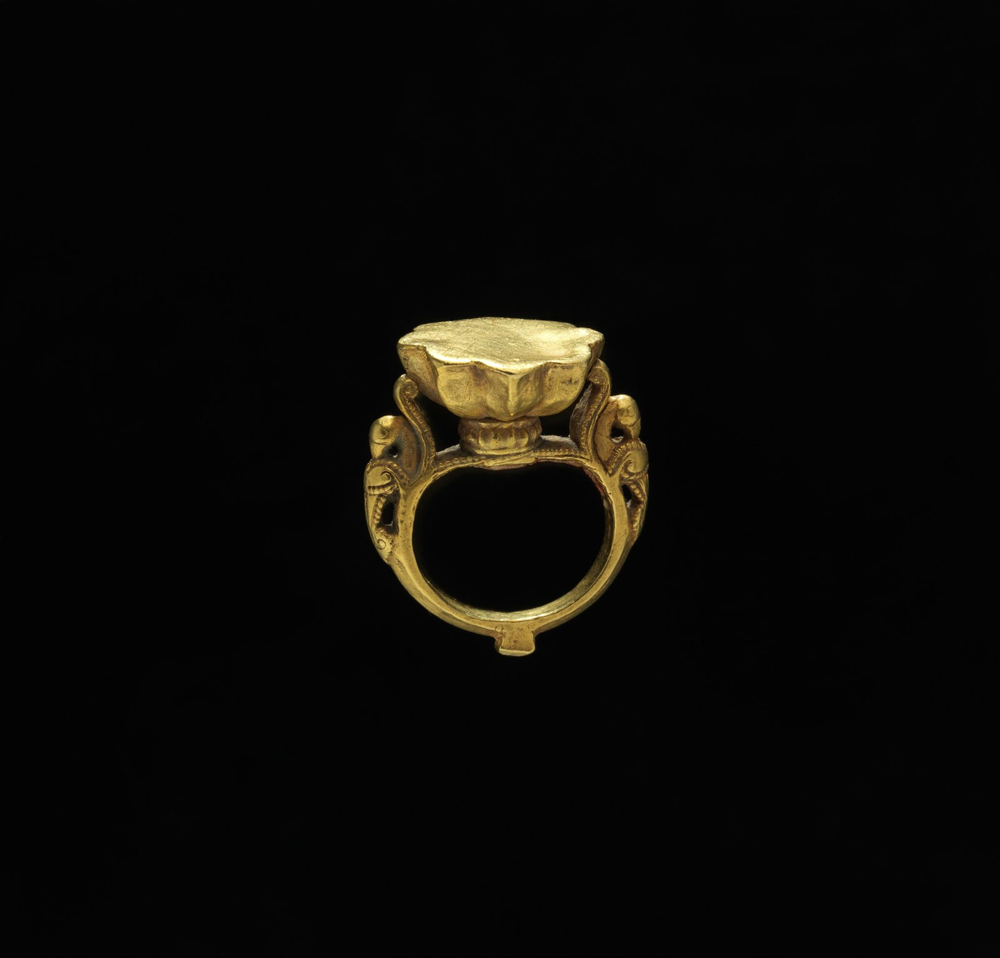

今日一句话总览
全球视觉艺术机构今天同时面对两条主线：一边以新馆、双年展和跨媒介展览继续扩张叙事版图，另一边则被公共预算、免费入场、劳动条件与档案归属等基础制度问题拉回现实。技术议题的重点也正从“能否生成”转向“如何授权、如何标注、谁为训练与传播负责”。
信息来源与检索范围
- 检索时间：2026-08-05 09:00—09:18（中国标准时间，UTC+8）。
- 覆盖地区：欧洲、北美、东亚、西亚、南亚、拉丁美洲；并检索非洲相关条目，但过去 72 小时内可由权威艺术来源复核的重要新增较少。
- 主要来源：The Art Newspaper、ARTnews、Artforum、Hyperallergic、ArchDaily、Google News RSS，以及博物馆、大学和地方政府新闻页。
- 时间范围：头条与机构动态以过去 24—72 小时为主；部分展讯、技术与教育资料扩展至过去 7 天，并在条目中标注。
- 访问失败 / 不确定项：浏览器动态页面连续超时，Deezen RSS 返回 403，The Art Newspaper 个别正文页二次读取超时；已改用其公开 RSS、可访问正文及其他来源交叉核验。部分机构新闻由 Google News RSS 收录，链接暂指向聚合条目；未取得完整展期的项目明确标为“以机构最终页面为准”，不作推测。
开放图像说明
- 配图：《戒指，17世纪》；The Metropolitan Museum of Art Open Access，Public Domain。
- 配图用于补充视觉艺术史与博物馆公共叙事，不是新闻事件现场照片。
一、必看头条（5 条）
1. 古根海姆阿布扎比分馆任命首任馆长，开馆进入最后阶段
- 地区 / 机构：阿联酋阿布扎比 / Guggenheim Abu Dhabi
- 来源：ARTnews；Hyperallergic 交叉报道
- 时间：2026-08-04（报道）；ARTnews 称计划于 2026-12-11 开馆。
- 事件摘要：Valerie Hillings 被任命为分馆首任馆长。她曾参与该项目早期收藏与策展框架，重点涉及 1960 年以来西亚、北非与南亚艺术；新馆由 Frank Gehry 设计，报道列出 30 个展厅。
- 为什么重要：这不只是一次人事任命，而是萨迪亚特文化区全球文化机构网络即将补上关键一环。谁来决定收藏区域、叙事语法和本地合作方式，将影响“全球现代与当代艺术”如何摆脱欧美中心的默认框架。
- 可延伸观察：开馆展是否真正给予海湾、西亚、北非、南亚艺术同等解释权；劳动治理、收藏来源与长期公共项目如何透明化。
2. 美国政府提出近年来最低水平的史密森尼预算方案
- 地区 / 机构：美国 / Smithsonian Institution
- 来源：Hyperallergic；Artforum
- 时间：2026-08-04
- 事件摘要：两家艺术媒体均报道特朗普政府提出大幅压缩史密森尼预算的方案。预算仍需经过国会程序，因此目前是“提案”，并非最终拨款结果。
- 为什么重要：史密森尼兼具收藏、科研、教育与免费公共服务功能；削减影响的不只是展览数量，还可能波及藏品保存、研究岗位、数字开放与地方合作。
- 可延伸观察：国会最终版本、各馆项目冻结顺序，以及预算压力是否伴随对历史叙事和展陈内容的行政干预。
3. 伦敦市长公开捍卫公共博物馆免费入场
- 地区 / 机构：英国伦敦 / 公共博物馆体系
- 来源：The Art Newspaper
- 时间：2026-08-04 11:58 UTC
- 事件摘要：伦敦市长 Sadiq Khan 呼吁城市公共博物馆继续维持免费入场。该表态发生在英国文化机构财政压力持续上升的背景下。
- 为什么重要：免费入场并非单纯票价政策，而是关于文化权利、游客经济与公共财政分担方式的制度选择；它直接决定低收入观众能否把博物馆当成日常空间。
- 可延伸观察：常设展免费、特展收费、会员制与捐赠之间能否形成更公平的混合模型。
4. 济州双年展公布 69 位艺术家及团体最终阵容
- 地区 / 机构：韩国济州 / Jeju Museum of Art、2026 Jeju Biennale
- 来源：Artforum
- 时间：2026-08-03；展期 2026-08-25 至 11-15。
- 事件摘要：第五届济州双年展题为“Iyahong: The Art of Metamorphosis”，公布 69 位艺术家及团体，进入开幕倒计时。
- 为什么重要：济州的岛屿生态、迁徙史与地方神话，使“变形”不仅是形式语言，也可成为连接环境、记忆和去中心化亚洲叙事的方法。
- 可延伸观察：参展者的地区结构、在地委任比例，以及双年展结束后作品与社区关系能否持续。
5. 格拉斯哥艺术学院 Mackintosh 建筑重建呼声升温
- 地区 / 机构：英国苏格兰 / Glasgow School of Art
- 来源：Artforum
- 时间：2026-08-04
- 事件摘要：围绕火灾后 Mackintosh Building 的未来，推动重建的声音再度增强；与此同时，格拉斯哥另一艺术机构 CCA 的档案处置也引发“不可逆文化损失”的警告。
- 为什么重要：建筑遗产不是“复原外观”这么简单，它要求在真实性、当代使用、消防标准、成本与城市记忆之间作长期决定。
- 可延伸观察：重建方案的公开程度、数字测绘资料如何使用，以及艺术院校是否把修复过程转化为教学与公共研究。
二、最新展览与展讯（8 条）
1. “Kimsooja: Dimensions of a Needle”
- 地点 / 机构：加拿大多伦多 / Museum of Contemporary Art Toronto（MOCA）
- 来源：Hyperallergic
- 时间：2026-08-04 发布评论；具体闭展日以 MOCA 页面为准。
- 展览主题与亮点：以过去约 20 年的视频行为、建筑装置与陶瓷为线索，聚焦 Kimsooja 反复使用的“针”——连接折叠/展开、记忆/迁徙、“不作为/不制作”等概念，并包含场域特定装置。
- 适合关注：研究迁徙、女性劳动、纺织隐喻、身体与建筑关系的创作者及策展人。
2. “Let’s Get It On”：Betye Saar 的服装与可穿戴实践
- 地点 / 机构：美国洛杉矶 / Roberts Projects
- 来源：Hyperallergic 洛杉矶八月展览指南
- 时间：展至 2026-08-22；指南发布于 08-04。
- 展览主题与亮点：汇集 1950—1970 年代 200 余件服装、照片和绘图，把 Saar 广为人知的装配艺术之外的服装设计、家庭制作与黑人文化机构经验纳入完整实践。
- 适合关注：服装史、黑人女性主义、档案型展览，以及希望理解“次要媒介”如何重写艺术家正典的人。
3. “Textiles as Monument”
- 地点 / 机构：美国洛杉矶 / Fowler Museum at UCLA
- 来源：Hyperallergic 洛杉矶八月展览指南
- 时间：2026 年 8 月在展，完整展期以馆方页面为准。
- 展览主题与亮点：三位南亚艺术家以柔软材料回应纪念碑传统，为常被主流历史排除的人群建立可触、可折叠、非永久性的纪念形式。
- 适合关注：纤维艺术、反纪念碑、南亚离散经验和公共记忆研究者。
4. “Among the Flowers I Learned to Love: A Garden of Decreation”
- 地点 / 机构：美国纽约 / MoMA PS1 户外庭院
- 来源：Hyperallergic
- 时间：报道发表于 2026-08-04；文中称项目预计展示两年。
- 展览主题与亮点：Precious Okoyomon 将混凝土庭院变为可进入、可滑行和可游戏的花园装置，使公共艺术不再只被观看，而成为身体、植物与社交共同生成的场所。
- 适合关注：公共艺术、参与式设计、儿童友好空间和博物馆户外运营者。
5. “Chitra Ganesh: The Scorpion Gesture”
- 地点 / 机构：澳大利亚墨尔本 / Monash University
- 来源：Monash University（Google News RSS 收录）
- 时间：机构信息发布于 2026-08-04；展期以 Monash 最终页面为准。
- 展览主题与亮点：标题延续 Ganesh 对神话图像、酷儿身体、漫画语言与南亚视觉文化的长期重组；值得观察大学展场如何把研究、教学与公众展示连接起来。
- 适合关注：图像叙事、后殖民研究、漫画与当代绘画交叉领域。
6. “Jean Nouvel: Without the Artist, Architecture Disappears”
- 地点 / 机构：中国上海 / 浦东美术馆
- 来源：ArchDaily
- 时间：ArchDaily 2026-08-03 发布；展期请以浦东美术馆公告为准。
- 展览主题与亮点：以 Jean Nouvel 的建筑思想为核心，把建筑视为与艺术家、场地、影像和展示共同形成的文化实践，而非孤立物件。
- 适合关注：建筑展策划、模型与影像陈列、艺术馆空间叙事，以及建筑与当代艺术协作的人。
7. “BECOMING BREATH” Marie Chouinard
- 地点 / 机构：加拿大蒙特利尔 / Montreal Museum of Fine Arts
- 来源：蒙特利尔美术馆（Google News RSS 收录）
- 时间：机构信息发布于 2026-08-04；完整展期以馆方页面为准。
- 展览主题与亮点：从题名即可见其把呼吸、身体和生成过程置于中心，提示舞蹈/表演如何被转译为美术馆中的影像、档案或空间经验；具体媒介构成待馆方页面进一步核实。
- 适合关注：表演保存、舞蹈影像、身体教育与跨机构合作。
8. 2026 济州双年展“Iyahong: The Art of Metamorphosis”
- 地点 / 机构：韩国济州 / Jeju Museum of Art 等场地
- 来源：Artforum
- 时间：2026-08-25 至 11-15。
- 展览主题与亮点：以“变形的艺术”为题，69 位艺术家及团体参与。亮点不只在名单规模，而在如何把岛屿地理、生态变化和地方知识转译成多场地展览。
- 适合关注：双年展研究、生态艺术、亚洲策展网络及文化旅游政策。
三、艺术事件 / 机构动态 / 市场与政策（7 条）
1. 伦敦多家文化机构员工投票罢工
- 来源：The Art Newspaper；Artforum
- 时间 / 地区：2026-08-03 / 英国伦敦。
- 摘要与意义：Royal Museums Greenwich 等机构员工围绕薪资和工作条件采取行动。对机构管理者而言，“观众体验”不能建立在隐形的低薪维护、教育和前台劳动之上。
2. 香港故宫文化博物馆馆长吴志华将于 2027 年卸任
- 来源：Artforum
- 时间 / 地区：2026-08-03 / 中国香港。
- 摘要与意义：领导层交接将影响馆际借展、故宫文化阐释、旅游与本地公众之间的平衡；接任程序及未来策展方向值得持续观察。
3. 纽约首届 Art Week NYC 公布 76 家参与画廊
- 来源：ARTnews；Artforum
- 时间 / 地区：2026-08-04 / 美国纽约；活动预计 11 月举行。
- 摘要与意义：城市级“艺术周”把分散画廊转化为共同流量入口。它可能降低单馆传播成本，也可能进一步挤压非商业空间的可见度，需观察路线、公共项目与销售导向的比例。
4. Gagosian 暂退巴塞尔，并关闭伦敦 Burlington Arcade 点位
- 来源：The Art Newspaper；Artforum
- 时间 / 地区：2026-07-31（7 日扩展）/ 瑞士、英国。
- 摘要与意义：超级画廊的点位调整说明“更多门店等于更强网络”的扩张公式正在接受成本与客流检验。判断市场不能只看拍卖成交，也要看一级市场的租赁、人员和区域配置。
5. 巴西收藏家 Bernardo Paz 计划在 Inhotim 附近建设新博物馆
- 来源：Artforum；The Art Newspaper
- 时间 / 地区：2026-08-04 更新 / 巴西。
- 摘要与意义：私人收藏基础设施在拉美继续扩大。关键不只是新建筑，而是治理结构、收藏公共性、地方就业与 Inhotim 周边生态承载力。
6. 西班牙警方找回失窃 16 年的 16 世纪圣母浮雕
- 来源：ARTnews
- 时间 / 地区：2026-08-04 / 西班牙。
- 摘要与意义：长期失窃文物仍可能依靠跨部门记录、市场监测和图像比对回流。收藏者与经销商的来源审查应覆盖旧照片、修复记录和失窃数据库，而非只看最近一次交易文件。
7. 土耳其 UNESCO 遗址出土大型古代大理石雕像
- 来源：ARTnews
- 时间 / 地区：2026-08-04 / 土耳其。
- 摘要与意义：大型发现会迅速进入媒体视觉循环，但考古价值仍依赖地层、原位关系、实验室分析与后续保护。展陈不应抢在研究结论之前制造过度确定的“故事”。
四、技术、知识与新观念（6 条）
1. “AI 是新的焚书”：生成式 AI 的文化基础设施批判
- 来源：Hyperallergic
- 时间：2026-08-04。
- 核心观点：该文属于评论而非技术新闻，强调大规模抓取、替代作者劳动和平台集中化可能造成文化生产生态的系统性损耗。
- 启发：创作者讨论 AI 不应只比较画质，还应记录训练来源、授权、报酬、可退出机制和生成内容标识；策展时应把工具链本身纳入作品说明。
2. AI 版权风险检测器进入影视与工作室讨论（7 日扩展）
- 来源：TheWrap
- 时间：2026-07-29。
- 核心观点：行业正尝试用检测和风险评分工具识别 AI 生成媒体中的版权暴露。
- 启发：检测器只能提供概率或流程证据，不能替代权利清理；创作团队更需要版本日志、素材许可台账和人工复核。
3. 深圳自然历史博物馆：地景化建筑与自然叙事
- 来源：ArchDaily
- 时间：2026-08-04。
- 核心观点：3XN、B+H 与筑博联合项目把博物馆建筑、地形和自然教育体验结合，展示空间本身成为知识叙事的一部分。
- 启发：自然史展陈应把动线、采光、材料、户外生态与标本解释视为同一套信息系统，而不是“建筑完成后再放展品”。
4. 战后重建为何应从恢复工艺知识开始
- 来源：ArchDaily
- 时间：2026-08-04。
- 核心观点：重建不只是复制物理城市，也要恢复工匠网络、材料知识和地方传承。
- 启发：文物修复与建筑教育可建立“技能档案”：记录工具、工序、失败样本、口述史和供应链，使知识不只依附少数专家。
5. 《Art Cure》讨论艺术与疗愈之间的证据链
- 来源：The Art Newspaper
- 时间：2026-08-04。
- 核心观点：新书分析艺术的疗愈能力。需要注意，“有益体验”不等于医学疗效，相关项目应区分临床证据、社会联结与主观幸福感。
- 启发：艺术教育者设计健康项目时，应与医学、心理和伦理专家共建评估，而非用“疗愈”作为不可证伪的宣传词。
6. Zimmerli Mobile 把大学美术馆带入社区（7 日扩展）
- 来源：Rutgers University
- 时间：2026-08-03。
- 核心观点：移动项目把大学收藏、教育资源和活动带到社区，而非等待观众进入校园。
- 启发：可移动展示应从“缩小版展览”升级为共同策划机制：路线、语言、时长和反馈都由社区实际使用情境决定。
五、今日组合观察
- **“扩张文化版图”与“守住公共性”同时发生。** 古根海姆阿布扎比进入开馆冲刺，巴西拟建新馆；另一边，史密森尼预算压力和伦敦免费入场辩论提醒我们：建筑扩张若没有稳定公共财政与可负担访问，影响力难以持续。
- **机构治理正在成为观众看得见的策展条件。** 伦敦文化机构罢工、香港故宫馆长交接、格拉斯哥档案争议都说明，人事、劳动与档案产权不是后台事务，它们决定展览能否生产、谁能发声、哪些记忆会留下。
- **亚洲双年展更强调岛屿与地方知识，而非复制国际名单。** 济州双年展以“变形”为题并公布 69 个参展主体；其价值要看在地委任、生态议题与社区关系，而不是艺术家数量。
- **“软材料、身体、花园”正在改写纪念与公共空间。** Kimsooja 的针与纺织隐喻、Fowler Museum 的纺织纪念碑、MoMA PS1 的参与式花园，都把纪念从坚硬永久物转向可折叠、可生长、可共同使用的过程。
- **AI 讨论从视觉奇观转向责任基础设施。** Hyperallergic 的文化批判与版权风险检测器的出现共同表明，下一阶段核心是可追溯训练、授权台账、风险分配和展示标识，而非单纯“像不像人工”。
六、给创作者 / 策展人 / 艺术教育者的启发
- **给创作者：** 建立自己的素材来源与授权日志，尤其是 AI 辅助、档案图像和传统纹样；把过程证据当成作品的一部分。可借鉴 Kimsooja 与纺织纪念碑案例，用日常材料承载迁徙、劳动和记忆，而不必默认宏大尺度。
- **给策展人 / 空间运营者：** 在策展预算中公开列出教育、前台、安装、维护和无障碍成本；“免费”应由制度性资金支持，而非转嫁给低薪劳动。新馆或户外项目可在设计早期同步考虑动线、生态维护、儿童使用与长期退出方案。
- **给艺术教育者：** 将 AI 素养拆为图像能力、版权伦理、数据来源与批判阅读四部分；将艺术与健康项目区分为体验改善、社会联结和临床疗效；尝试移动式、社区共同策划的课程，而非只组织一次性参观。
七、今日可收藏链接
- Guggenheim Abu Dhabi 任命首任馆长 — 了解新馆规模、区域收藏定位与开馆时间。
- 史密森尼预算削减提案 — 追踪美国公共文化财政的重要入口。
- 伦敦市长捍卫博物馆免费入场 — 观察公共文化权利与运营成本之争。
- 2026 济州双年展最终阵容 — 展期、主题与参展规模的核心来源。
- Kimsooja: Dimensions of a Needle — 纺织、迁徙与场域装置的评论样本。
- 洛杉矶八月十个展览 — Betye Saar 与纺织纪念碑等展览线索。
- 纽约夏季户外艺术 — 参与式花园与户外项目运营参考。
- 上海浦东美术馆 Jean Nouvel 展 — 建筑展与美术馆空间叙事案例。
- 深圳自然历史博物馆 — 地景、建筑和自然教育一体化案例。
- AI Is the New Book Burning — 从文化生态而非画质评估生成式 AI。
- 战后重建与工艺知识 — 修复、工匠网络与知识保存的思考。
- Royal Museums Greenwich 员工罢工 — 理解文化劳动条件的直接资料。
- 16 世纪圣母浮雕失而复得 — 藏品来源审查与失窃数据库案例。
八、明日追踪建议
- 古根海姆阿布扎比是否发布首展完整名单、购藏政策、公众票务与劳动治理文件。
- 美国国会及史密森尼各馆对预算提案的正式回应，哪些研究、教育或数字项目首先受影响。
- 济州双年展 69 位参展者的地区分布、在地委任比例与场地清单。
- 香港故宫文化博物馆接任程序及 2027 年后的策展、借展与公共教育方向。
- AI 版权风险检测工具是否公开方法、误报率和责任边界，能否被独立审计。
---